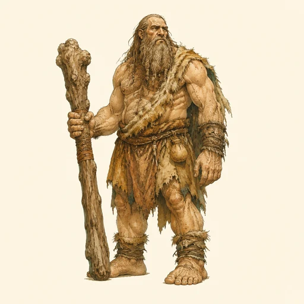
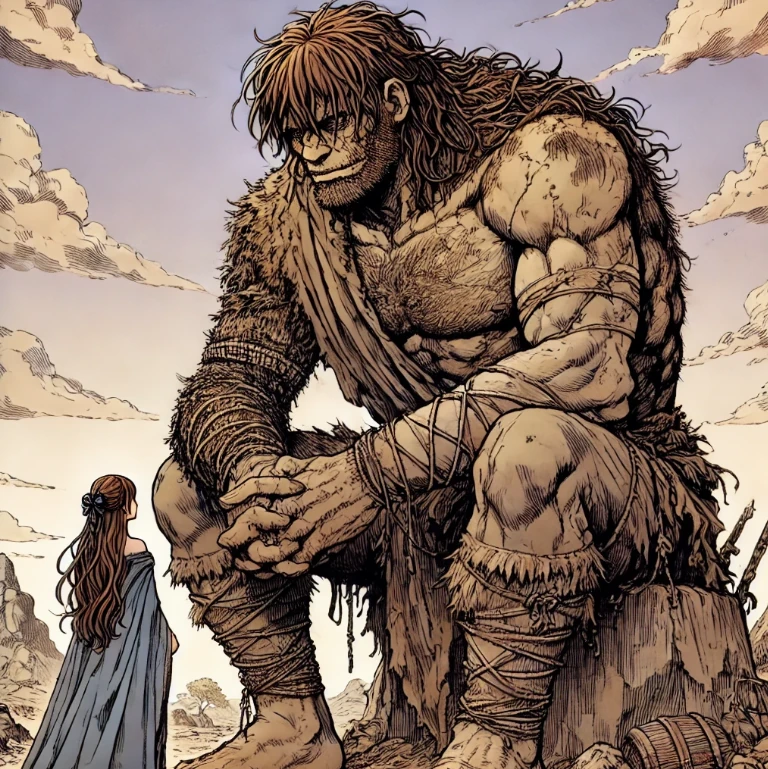
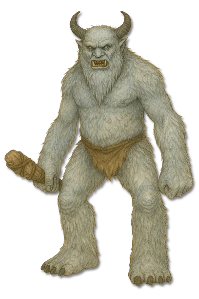
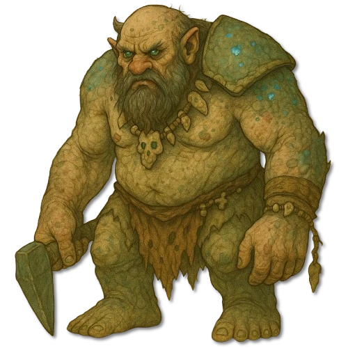
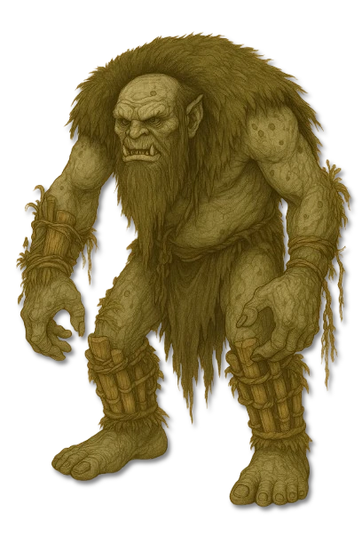

???
???
Noch keine gesicherte Überlieferung.

KreaturenarchivAleria · Abgelegene Berge, Wälder, Höhlen und Kältezonen · Archivblatt III / 04
Gigantische humanoide Kreaturen uralter Abstammung
Riesen gelten als Verkörperungen urtümlicher Natur, wilder Schöpfung und gefallener Größe. Ihre gewaltigen humanoiden Körper können Landschaften prägen, Festungen brechen und zugleich eine verlorene Würde erkennen lassen, an die sich manche von ihnen nur noch bruchstückhaft erinnern.

„Wenn ein Riese schweigt, hört man den Berg atmen; wenn er zürnt, antwortet der Berg mit Steinen.“Überlieferter Spruch aus den Berichten der Riesenbeobachter
Sechs Merkmale · Skala 1–10
Die Archivbewertung beschreibt einen ausgewachsenen Riesen. Unterarten, Alter und die jeweilige Bindung an Landschaft oder Element können einzelne Werte deutlich verändern.
Quelle der Einordnung: Aus Körpergröße, Landschaftseinfluss, elementaren Fähigkeiten, Verhalten und den überlieferten taktischen Schwächen abgeleitet
Überlieferte Erscheinungsformen
Sieben Riesenformen sind benannt und bildlich überliefert. Acht weitere Stellen bleiben ausdrücklich offen, bis Namen und sichere Beschreibungen vorliegen.

Uralte Riesenform
Eine machtvolle, traditionsreiche Form, die besonders eng mit den ältesten Erzählungen über Riesen verbunden wird.

Kraftvolle Riesenform
Ein massig gebauter Riese, dessen überragende Körperkraft selbst unter seinesgleichen hervorsticht.

Einäugige Riesenform
Ein einäugiger Riese mit ausgeprägter Tiefenwirkung seines Blicks, großer Reichweite und schwerer Schlagkraft.

Alte Riesenlinie
Eine fremdartig wirkende Linie, deren Gestalt in Überlieferungen häufig mit Chaos und uralter Wildnis verbunden ist.

Wehrhafte Riesenform
Ein widerstandsfähiger Riese, der sein Gebiet mit Geduld beobachtet und auf Eindringlinge mit überwältigender Gewalt reagiert.

Zurückgezogene Riesenform
Eine scheue und schwer aufzuspürende Form, die lange Ruhezeiten mit plötzlicher territorialer Härte verbindet.

Naturverbundene Riesenform
Ein Riese, dessen Erscheinung und Verhalten besonders eng mit wilder Vegetation und unberührter Landschaft verwoben sind.
???
Noch keine gesicherte Überlieferung.
???
Noch keine gesicherte Überlieferung.
???
Noch keine gesicherte Überlieferung.
???
Noch keine gesicherte Überlieferung.
???
Noch keine gesicherte Überlieferung.
???
Noch keine gesicherte Überlieferung.
???
Noch keine gesicherte Überlieferung.
???
Noch keine gesicherte Überlieferung.
Riesen sind uralte humanoide Kreaturen, deren Größe jede vertraute Ordnung sprengt. In Erzählungen verkörpern sie Natur, Chaos und wilde Schöpfung zugleich. Sie können Wächter einer Landschaft oder ihre größte unmittelbare Bedrohung sein.
Ihre Bewegungen wirken langsam, doch die Reichweite eines einzigen Schrittes oder Schlags gleicht diesen Eindruck aus. Einzelne Riesen zeigen Reste von Sprache, Erinnerung und Würde; andere reagieren beinahe nur noch auf Hunger und Störung.
Eine Überlieferung aus dem Äon der Göttlichen führt die Riesen auf albische Stämme zurück. Migdal der Trickser und Grimnar der Plünderer sollen ihnen Stärke, Größe und einen Anteil an Göttlichkeit versprochen haben. Die geschlossenen Pakte vergrößerten ihre Körper, während Verstand und Kultur verfielen.
Seitdem gelten Riesen als Zeichen gefallener Größe und ungestillter Hybris. Ob der Wandel auch Unsterblichkeit brachte oder nur ein außergewöhnlich langes, rastloses Leben, bleibt ungeklärt.
Riesen meiden dicht bewohnte Gebiete und ziehen sich in Berge, Höhlen, alte Wälder und kalte Wildnis zurück. Ihre Lager sind an gebrochenem Fels, tiefen Tritten und unnatürlich verschobenen Baumstämmen oft schon aus großer Entfernung zu erkennen.
Manche Landschaften scheinen sich ihrer Anwesenheit anzupassen. Waldformen tragen Moos und Pflanzen, während Riesen kalter Regionen mit Eis, Wind und langer Starre verbunden werden. So spiegelt jedes Revier zugleich Majestät und Verwüstung.
Die meisten Riesen verteidigen ihr Gebiet und begegnen Menschen mit Gleichgültigkeit oder Feindseligkeit. Neben roher Gewalt berichten Beobachter von langer Melancholie und Augenblicken, in denen ein Riese auf alte Zeichen oder Lieder reagiert.
Absprachen sind selten, aber nicht ausgeschlossen. Wer einen Riesen anspricht, muss dessen Stolz, langsame Entschlüsse und plötzliche Reizbarkeit bedenken; ein scheinbar friedlicher Handel kann mit einem einzigen missverstandenen Wort enden.
Riesen entwurzeln Bäume, werfen Felsblöcke und können Mauern oder Befestigungen mit wenigen Treffern brechen. Ihre Körper widerstehen vielen gewöhnlichen Waffen, und ihre Ausdauer erlaubt ihnen lange Märsche durch unwirtliches Gelände.
Einzelne Formen beherrschen elementare Kräfte wie Frostwind oder Feuer. Langsame Reflexe, geringe Wendigkeit und der gezielte Einsatz von Magie bieten kleineren Gegnern dennoch Möglichkeiten, solange sie Abstand und Gelände kontrollieren.